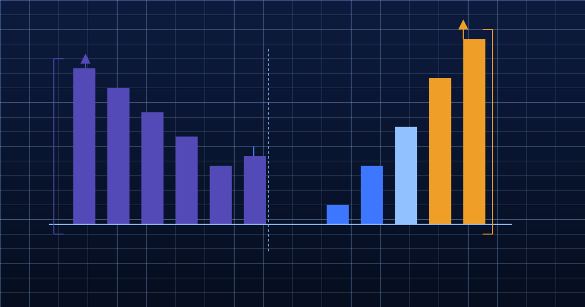
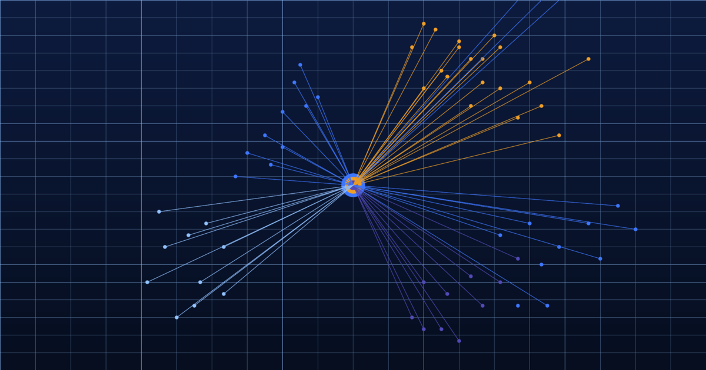

Intelligence, not data
Thinking on customer analytics, demographic insight, and what it means to truly know your market. Market analysis and thought leadership from the Cogstrata team.
Market Analysis

The CACI Acorn problem: why geodemographic classifications are stuck in 2011
CACI's Acorn classification is anchored to census data that is now fifteen years old. We examine the structural reasons why, and what continuous AI refresh changes for UK businesses.
5 Feb 2026 · 7 min read

Experian Mosaic vs. reality: the hidden cost of a three-year data lag
Mosaic updates on a multi-year cycle. This analysis examines the commercial cost of that lag in credit risk, campaign targeting, and churn prediction — and what always-on data changes.
12 Feb 2026 · 8 min read

From batch to always-on: the architecture of modern customer intelligence
The shift from periodic batch data refresh to always-on AI processing is not just a technical upgrade — it changes what customer intelligence can do. A look at the architecture behind continuously-refreshed demographic data.
12 Mar 2026 · 9 min read

Why AI-refreshed data outperforms the annual survey
The problem with demographic data that's only as current as last year's fieldwork — and what always-on AI processing changes for businesses that depend on knowing their customers.
10 Mar 2026 · 5 min read
Thought Leadership

Beyond the big two: why FS teams are moving away from CACI and Experian
Financial services analytics teams are quietly rebuilding their third-party data stacks. We examine what is driving the shift — from FCA Consumer Duty pressure to the limits of pre-crisis demographic classification.
19 Feb 2026 · 9 min read

The true cost of stale data: a CFO's guide to demographic intelligence ROI
Outdated demographic data has a measurable financial cost — in mispriced risk, wasted campaign spend, and missed retention opportunities. This piece puts concrete numbers to the problem.
26 Feb 2026 · 8 min read
Postcode-level intelligence: why the privacy-safe approach wins in the long run
Individual-level personal data creates compliance risk and erodes customer trust. Postcode-level intelligence delivers equivalent commercial precision without the liability — and the regulatory tide is firmly behind it.
5 Mar 2026 · 7 min read

60 things a postcode can tell you about your customer
From commute mode to retail desert risk — a tour of the demographic signals hiding in plain sight at the postcode level, and what each one means for targeting, risk, and personalisation.
1 Mar 2026 · 6 min read